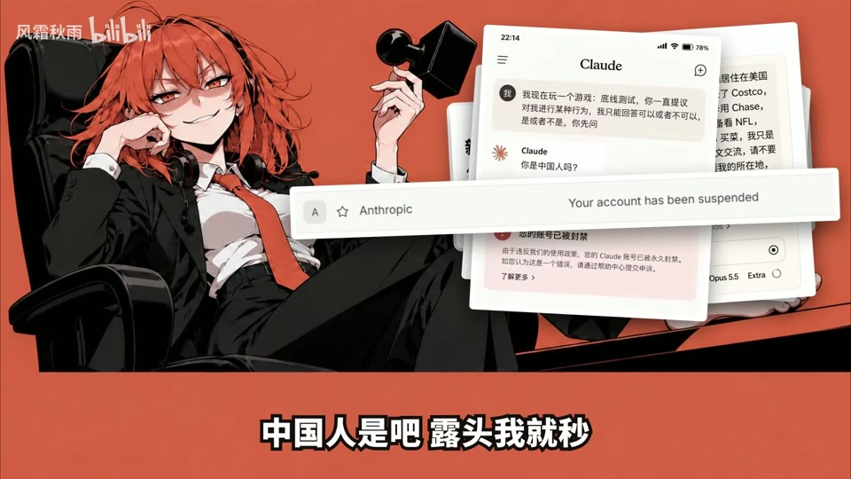
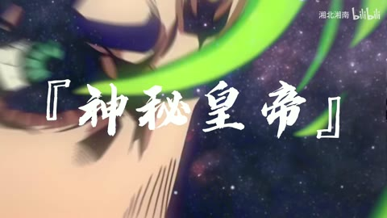

← 案例图谱AI34 / 主要视觉研究样本
Claude热唱：《您的账号已被封禁》
风霜秋雨 · 3万播放快照 · <10万 · B站原作 ↗
橙红黑人物海报保持统一，前台人物、证据墙、背影看板三种结构有功能区分；末绿/红点阵强化数量变化。

约20.800秒 · 案例代表帧从画面里找依据
这一例先看什么
橙红黑人物海报保持统一，前台人物、证据墙、背影看板三种结构有功能区分；末绿/红点阵强化数量变化。
审美判断
底部白描边歌词、黑底英文条、红色封印与白色截图卡对比清楚；大批截图叠满时只宜读主要提示，不把每份截图当持续正文。
迁移到自己的题材
片头、宣言、观点短片、情绪段落、纯文字预告、预算有限但有明确文案的作品。
教学提问：这是需要读懂的正文、只需识别的关键词，还是作为材质的字纹？三者有没有混淆？
带画面的分析单元
图像标出取样时间，对应观察中的关键状态。单帧不能独立证明运动，连续性请结合摘录。表达作用与应用场景是教学解读，复现路线是建议，不是原作者工程还原。
分析单元 01 / 0—8秒
海报式标题揭示、描边字幕、标签式排版
实际观察
橘黑插画底图变暗，右侧白色粗体标题配黑描边与细横线，英文装在白条内；人员表逐步出现
表达作用（教学解读）
把阅读顺序变成观看顺序；用字重、位置与停留表达强调、犹豫或压迫。
具体应用场景
观点短片、歌词视觉、人物宣言、章节、情绪高潮；先决定哪些词必须读懂，哪些只是纹理。
复现建议（非原作者工程还原）
现成插画+暗色透明罩+字体描边+位置/透明度关键帧
直出判断：易，素材齐全后可代码直出
常见误用：每个字都弹跳、整句停留不足、所有文字同时争主位。严肃叙事里无理由的回弹会削弱重量。
分析单元 02 / 12—56秒
截图卡片拼贴、证据墙、印章砸落
实际观察
统一橘底人物立绘上不断叠加网页/邮件/聊天卡片，卡片有投影、轻微旋转和前后遮挡；部分盖红色封字印章
表达作用（教学解读）
让多个时间、视角或人物关系同时出现；通过对位建立联系，而非只提高画面数量。
具体应用场景
记忆、对话、关系对照、主观视点、多人角色介绍、跨素材呼应。
复现建议（非原作者工程还原）
截图裁切、2D旋转缩放/平移、drop shadow；盖章加快速缩小与轻微回弹
直出判断：易到中，需要先整理截图并遮去不应公开内容
常见误用：窗口太多无主次，眼位错位、边框挤脸，层的出现没有叙事理由。
分析单元 03 / 59—61秒
转场
实际观察
约60秒变为黑底英文大字。81.1–82.967秒主体基本稳定，83.033秒出现偏白的新构图，属于白色亮闪辅助换场，而非连续高速换镜
表达作用（教学解读）
把阅读顺序变成观看顺序；用字重、位置与停留表达强调、犹豫或压迫。
具体应用场景
观点短片、歌词视觉、人物宣言、章节、情绪高潮；先决定哪些词必须读懂，哪些只是纹理。
复现建议（非原作者工程还原）
白色遮罩alpha脉冲+底图切换，按帧调持续时间
直出判断：易
常见误用：每个字都弹跳、整句停留不足、所有文字同时争主位。严肃叙事里无理由的回弹会削弱重量。
分析单元 04 / 129—130.933秒
局部替换
实际观察
橘底与指向左侧的人物保持；129秒卡片缩入，130.600秒卡片消失，130.667秒换成GPT路牌，130.867秒另一个半透明帖子卡片渐入。整段主要是前景层替换和淡入，不是真正换了拍摄镜头
表达作用（教学解读）
将平面关系变成有前后层次的观看空间；小幅运动可以放大情绪。
具体应用场景
静止画MAD、回忆、图像故事、海报动态化、人物介绍。
复现建议（非原作者工程还原）
独立图片层按时间开关，位移缩放、alpha过渡
直出判断：易
常见误用：所有层同速或反向乱动；人物像纸板；补洞不完整；视角变化超出原画信息。
分析单元 05 / 140—164秒
字效与数据动画
实际观察
人物背对黑板，中文逐字出现配英文；随后绿点阵陆续变红，已封禁计数增长
表达作用（教学解读）
把阅读顺序变成观看顺序；用字重、位置与停留表达强调、犹豫或压迫。
具体应用场景
观点短片、歌词视觉、人物宣言、章节、情绪高潮；先决定哪些词必须读懂，哪些只是纹理。
复现建议（非原作者工程还原）
逐字substring/遮罩揭示，规则圆点网格按时间改色、计数插值
直出判断：易，规则动画很适合代码
常见误用：每个字都弹跳、整句停留不足、所有文字同时争主位。严肃叙事里无理由的回弹会削弱重量。
用连续画面核对
保留原研究的多段局部摘录。片段含音轨不代表已听审；本资料不评价音乐卡点或对白节奏。
短时变化怎样理解
印章、截图累积、黑场英文与计数看板提供明确状态转移；截图数量增加属于局部信息更新，不按张数当整屏切镜。
把镜头连接、版式更新、局部图层变化和镜内运动分开记录。所查窗口是下限，不是全片平均或AI／人工排名。
原始逐窗记录 →这次练习的约束
选一段自己写的40字文案，制作“克制”和“急迫”两版；不增加文字，用停留、字重和留白改变语气。
先写“我希望观众明白／感到什么”，再选本页的一种手法。完成无效果基础版后再加层；解释新增层带来的收益和代价。
打开练习与复盘表 →来源、观看范围与制作归属
实际检查范围：{"overview": "0–164秒，每4秒一张，共42张；三张完整概览均已看图", "dense": ["81.100–83.033秒，15fps采样", "129.000–130.933秒，15fps采样"], "audio_reviewed": false}
制作线索：作者简介明确词与PV Opus5.5、曲SunoV6、图GPT；这是制作分工声明，不等于没有人工选择和调试。
边界：作品中的封禁原因、注册量、界面截图与争议文案未做事实核查，本研究只评价画面。人物、歌词、声音和PV制作署名按作者说明分别保留。
播放快照保存时间（UTC）：2026-10-20T00:32:57.424025+00:00。H30制作方式为推定；同源改编、仿作和转载依原记录标注。
原始案例记录 · 选样表把你的判断留下来
笔记仅尝试保存在本机浏览器；浏览器策略可能限制本地文件存储，重要内容请导出。
沿着同一问题继续阅读
 H31
H31漫画、纸张与记忆
前段小窗拼贴逐步进入满幅能量空间，结尾缩回黑底方幅与白纸字卡；亮色高潮和留白尾声形成明显密度变化。
主要样本7个分析单元
界面、程序与秩序
紫火跨场景门与年代对照、路线头像、任务条和生日群像服务平行世界二创情节，UI有明确用途。
主要样本8个分析单元

H12字重、留白与情绪
前段星空雨线与文字建立信息节奏，后接漫画卡片推进、黑场字卡降低密度，图文分段明确。
主要样本5个分析单元